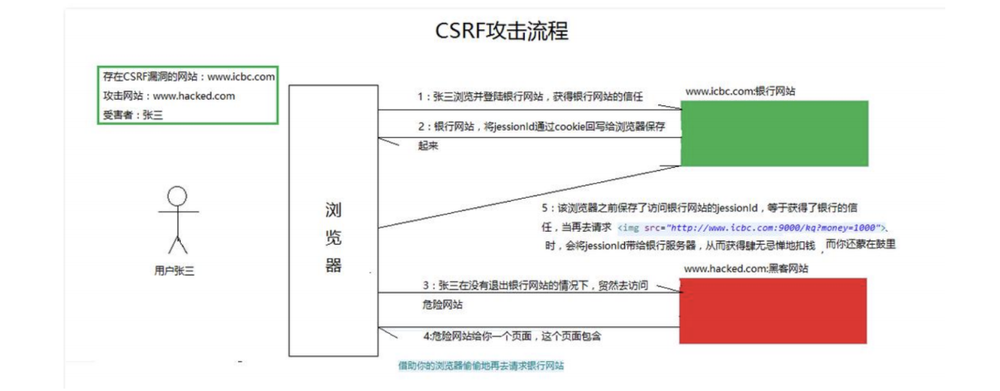
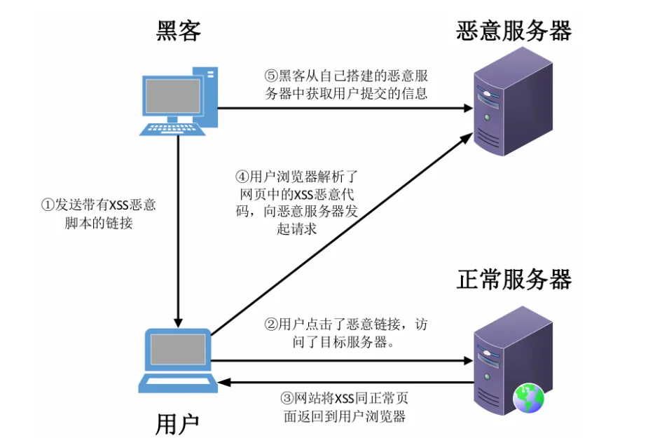
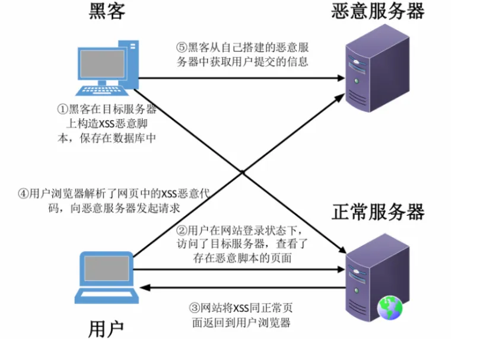

漏洞汇总
SQL注入
SQL注入原理
SQL注入是指Web应用程序对用户输入数据的合法性未进行判断、处理 。前端传入的参数是攻击者可控的，并且参数被正常带入到数据库中执行，攻击者可以通过构造不同的 SQL语句来对数据库进行操作，正常情况下，攻击者可以对数据库进行高危操作（例如，数据查询、WebShell写入、命令执行等操作）。
危害
- 数据库泄露
- 网页篡改
- 获取系统权限
- 万能密码
- 敏感文件读取
产生条件
- 用户对输入参数可控
- 参数可以被带入带数据库中执行
如何寻找SQL注入漏洞：
测试网站中所有可能与数据库进行交互（增删改查）的点
注入流程
判断是否存在注入，注入是字符型还是数字型
猜解SQL查询语句中的字段数
确定显示的字段回显位置
获取当前数据库
获取数据库中的表
获取表中的字段名
查询到账户的数据
常见注入手法
- 联合注入
- 报错注入
- 布尔盲注
- 时间盲注
- 宽字节注入
- 堆叠注入
- 二次注入
- Cookie注入
- DNSlog外带注入
常用工具
SQLmap、BurpSuite
防御方式
下载相关防注入文件，通过incloud包含在网站配置文件里
使用函数过滤
使用白名单过滤
使用WAF拦截
采用PDO预处理
CSRF(跨站请求伪造)
CSRF原理
攻击者通过技术手段欺骗用户浏览器访问一个自己曾经认证过的网站并执行一些操作（如发邮件，发消息，甚至财产操作如转账和购买商品）。由于浏览器曾经认证过，所以被访问的网站会认为是真正的用户操作而去执行。
漏洞利用方式

- 用户打开浏览器，登录信任网站A，输入账号密码请求登录网站A。（登陆操作）
- 用户信息通过验证后，网站A产生Cookie信息返回给用户浏览器。 （返回cookie）
- 用户在未退出网站A之前，在 同一浏览器 又打开了一个网站B。 （新建TAB页，打开了新的网站）
- 网站B 接收到用户的访问请求后，网站B将包含向网站A请求的恶意的代码返回给浏览器，用户浏览器渲染执行，触发恶意请求。
- 该条请求发送后，可信网站会以存储在浏览器中用户的Cookie处理该请求，导致用户执行恶意操作。（网站A根据请求中的Cookie信息进行处理，那么最终执行恶意操作就是用户）
注：用户登录受信任网站A，并在本地生成Cookie。且在不登出A的情况下，访问危险网站B。
CSRF分类
GET型
即网站某个功能点是通过GET传参，由于其参数直接暴露在URL中，攻击者可以更容易地发现该漏洞并构造恶意链接
- 示例：
- 假设目标网站的用户密码修改接口是
http://example.com/change_password?new_password=123456。 - 攻击者可以构造一个恶意链接
<a href="http://example.com/change_password?new_password=123456">点击这里</a>，用户点击后会修改密码。
- 假设目标网站的用户密码修改接口是
POST型
虽然POST请求相对安全，但如果缺少CSRF令牌验证等防护措施，攻击者仍可以通过构造恶意表单等方式发起伪造请求。
示例：
1
2
3
4
5
6<form action="http://example.com/change_password" method="POST">
<input type="hidden" name="new_password" value="123456" />
</form>
<script>
document.forms[0].submit();
</script>- 当用户访问包含该代码的页面时，表单会自动提交，修改用户密码为
123456。
- 当用户访问包含该代码的页面时，表单会自动提交，修改用户密码为
CSRF漏洞危害
- 数据篡改
- 恶意操作
- 配合XSS漏洞攻击
- CSRF蠕虫
如何寻找CSRF漏洞
一般在用户密码修改、信息修改、添加账号、发布文章等一些敏感操作位置，如果没有 二次校验 （图像验证码、短信验证码、原密码）就可以进行测试。（原密码校验、图形校验、短信校验等）
当使用BP工具抓包后，数据包中如果没有Referer和token字段，大概率存在CSRF漏洞
常用工具
CSRFTester 、 CSRF RequestBuilder 、 BurpSutie
CSRF防御
验证Referer来源
增加token验证
增加二次校验
增加验证码机制
使用同步器令牌模式
使用双重提交 cookie
使用 HTTP 标准标头来验证请求的来源
基于 UI 的验证，例如基于 CAPTCHA 的授权和 MFA
CSRF 令牌的使用
XSS(跨站脚本攻击)
XSS漏洞原理
形成XSS漏洞主要原因是：因为Web应用程序对 用户输入的内容 和 程序输出的内容 没有经过严格的校验和过滤，导致攻击者构造恶意的代码带入后，又被当作正常的代码输出至前端页面，浏览器当作有效代码解析执行从而产生危害。
危害
窃取用户 Cookie 信息
网络钓鱼，包括获取各类用户浏览器账号
劫持用户浏览器，从而执行任意操作
网页挂马
配合其他漏洞使用，如（CSRF）实施进一步危害
传播跨站脚本蠕虫
强制弹出广告
漏洞分类
反射型、存储型、DOM型
反射型
介绍：一般是网站只是简单地将用户输入的数据直接或未经过完善的安全过滤就在浏览器中进行输岀，导致输岀的数据中存在可被浏览器执行的代码数据，反射性XSS的恶意代码在前端的参数中，需诱导受害者主动访问恶意链接，从而触发XSS攻击。
特点：一次性攻击，交互触发
攻击点：如搜索栏、填写表单等
攻击过程：
构造恶意代码的链接
设法发送给受害者。
受害者打开页面，向服务器发送请求。
服务器解析地址，然后返回源代码。
浏览器接收，解析代码触发XSS漏洞攻击。
图示：

存储型
介绍：一般是由于Web应用程序对用户输入数据的不严格，导致Web应用程序将黑客输入的恶意跨站攻击数据信息保存在服务端的数据库或其他文件形式中。如通过留言板、发布文章等地方插入数据时没有经过严格过滤，那么恶意代码将会被存储到数据库中，当用户访问该页面、文章、留言内容时触发代码加载执行。
特点：隐蔽性高，可以多次执行，永久性存在
攻击点：留言板、评论区、发布文章点……所有可能添加数据到数据库中的地方
攻击过程：
用户通过相关功能点，将恶意的XSS代码，存储到服务器中
当用户浏览到包含恶意XSS代码得页面时。（向服务端发送请求获取源代码信息）
服务器解析请求，将包含有恶意XSS代码的源代码发送给浏览器
浏览器接收，解析代码触发XSS漏洞攻击
图示：

DOM型
DOM树：

介绍：基于DOM文档对象的一种漏洞，并且DOM型XSS是基于JS上的，并不需要与服务器进行交互。其通过修改页面DOM节点数据信息而形成的ⅩSS跨站脚本攻击。不同于反射型XSS和存储型XSS，基于DOM的XSS跨站脚本攻击往往需要针对具体的 Javascript DOM代码进行分析，并根据实际情况进行XSS跨站脚本攻击的利用。
特点：不与服务器做交互，达到绕过WAF、躲避服务端的检测效果。
攻击点：通过js脚本对对文档对象进行编辑，从而修改页面的元素。
攻击过程：
攻击者给用户发送带有恶意字符串的链接
用户点击该链接
服务器返回HTML文档，但是该文档此时不包含那个恶意字符串
客户端执行了该HTML文档里的脚本，然后把恶意脚本植入了页面
客户端执行了植入的恶意脚本，XSS攻击就发生了
常用测试标签
<h1>
<script>
<a>
<svg>
<input>
<link>
常用事件
onClick() (表单中点击触发)
onMouseMove() (攻击者需要让用户将光标移到一个图片或表格)
onError() (在加载文档或图像时发生错误)